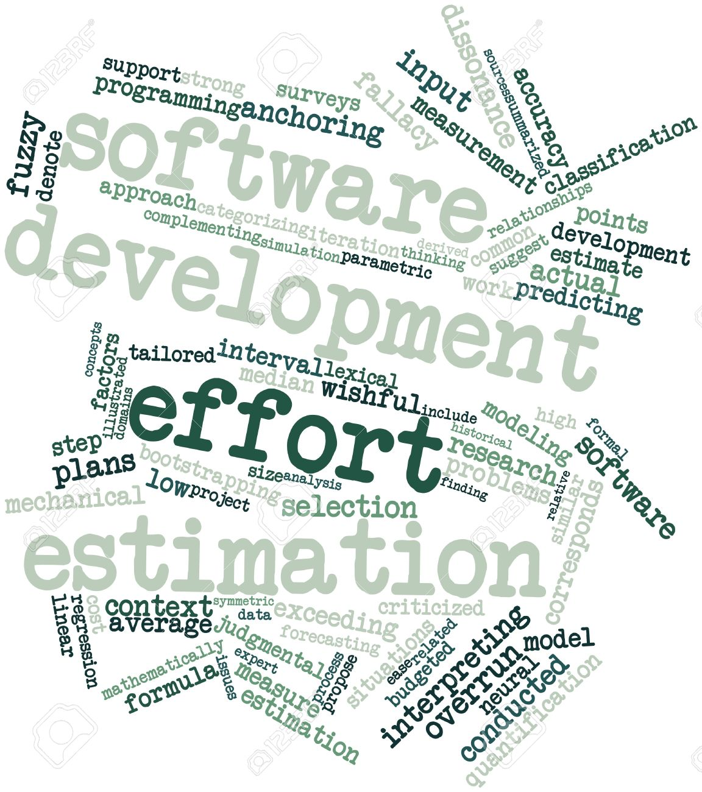

The Clubs At Manoa web application project with my group provided valuable insights into effort estimation and tracking for coding and non-coding tasks. Initially, I estimated effort hours by considering the maximum potential time someone might require, including leisurely execution and troubleshooting. This approach aimed to create a buffer for unforeseen challenges.
Effort estimates offer significant advantages in project management, particularly within an agile environment. They establish realistic expectations for task completion, allow for intentional time blocking, and set achievable goals.
Tracking actual effort for coding and non-coding activities offers further benefits. It reveals the actual time investment in non-coding aspects compared to pure coding, often exceeding initial estimations. Additionally, discrepancies between estimated and actual effort can pinpoint areas of unexpected difficulty within the project. Conversely, tasks completed under the estimated time allow for workload redistribution within the team.
In this project, I tracked my effort using a combination of my phone’s timer and my computer’s timekeeping tools. While I believe the tracking was reasonably accurate, I did encounter challenges. Ideally, dedicated time blocking for each task would enhance accuracy. I found myself switching between tasks, inadvertently tracking time for related tasks instead of the one at hand. Furthermore, forgetting to stop the timer when stepping away from the computer necessitated adjustments in the final recorded data.